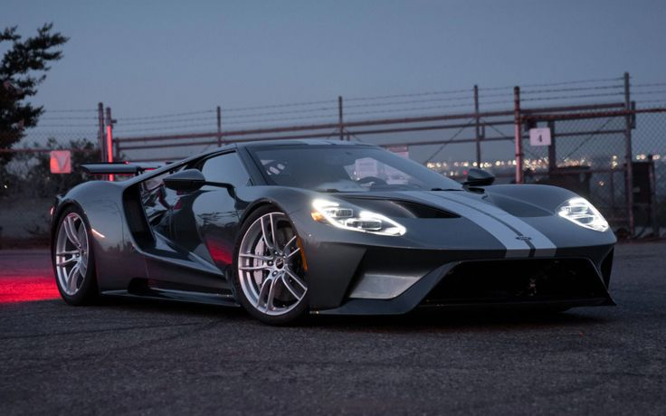
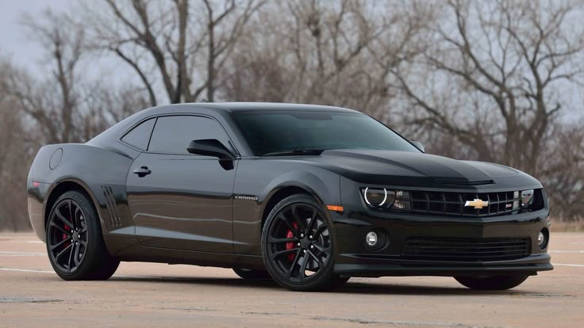
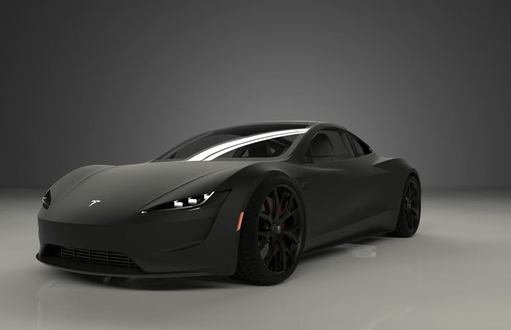
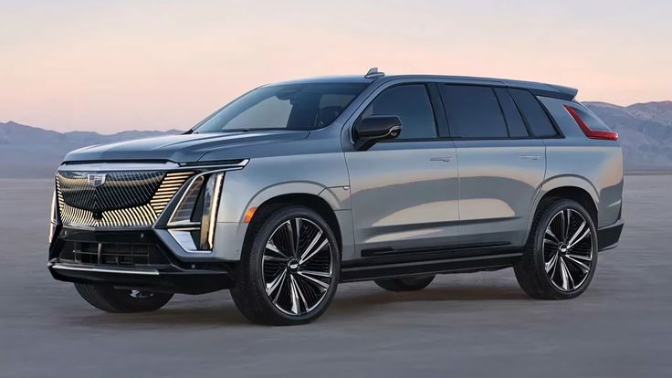

Introduction
American cars are know for their power, size, and innovation The United States has played a major role in shapping the global automative industry, especially with the development of muscle cars and modern electric vehicles
History of American cars
The American automotive industry began in the early 20th century, with companies like Ford revolutionising car production through assenbly line manufacturing. The 1950s and 1960s saw the rise of muscle cars, which became cultural icons for their powerful engines and aggressive styling.
Notable American Car Brands
Some of the most famous American car brands include:
- Ford
- Chevrolet
- Dodge
- Tesla
- Cadillac

Ford
Ford is one of the oldest and most influential car manufactures in the world It revolutionised production with the assembly line and remains a leader in both traditional amd electric vehicles.
What Ford is known for
- Mass production innovation
- Reliable vehicles
- F-150 pickup truck
- Iconic trucks and muscle cars
Popular Ford Models
- Ford Mustang
- Ford F-150
- Ford GT
- Ford Bronco

Chevrolet
Chevrolet, aslo known aa Chevy, is famous for producing a wide range of vehicles from affordable cars to high-perfomance sports cars
What Chevrolet is known for
- Affordable and reliable vehicles
- Performance models like the Camaro and Corvette
- Strong presence in motorsports
Popular Chevrolet Models
- Chevrolet Camaro
- Chevrolet Corvette
- Chevrolet Silverado
- Chevrolet Tahoe

Dodge
Dodge is well known for its powerful muscle cars and aggressive designs, Focusing heavily on performance and speed.
What Dodge is known for
- High-performance muscle cars
- High horsepower engines
- Strong V8 engines
Popular Dodge Models
- Dodge Charger
- Dodge Challenger
- Dodge Durango
- Dodge Ram

Tesla
Tesla is a leading electric vehicle manufacturer that has transformed the autoamtive industry with innovative technology and sustsainable energy solutoins
What Tesla is known for
- Electic vehicles
- Autopilot technology
- Innovation in sustainability
Popular Tesla Models
- Model S
- Model 3
- Model X

Cadillac
Cadillac is known for luxury and comfort, offering premium vehicles with advanced technology and elegant designs
What Cadillac is known for
- Luxury vehicles
- Advanced technology
- Comfort and style
Popular Cadillac Models
- Escalade
- CT5
- XT5